運営担当者向け
問い合わせから実績まで、1つの流れで進める手順
本書は、ポートフォリオ用の架空の案件のデモを使って説明しています。画面に出てくる会社名・人名・データは、すべて架空です。
はじめて使う方が、上から順に読めば、問い合わせの受付から実績の記録まで進められるように書いています。すでに使っている方は、目次から必要な章だけ読んでください。
| 表記 | 意味 |
|---|---|
| 12 | 画面写真の中の番号です。本文の番号と同じものを見てください。 |
| AI | AIが行うこと。情報の整理と、文章の下書きだけです。 |
| システム | システムが自動で行うこと。記録・進み具合・タスクの管理です。 |
| 人 | 担当者が行うこと。最終の確認・判断・例外への対応です。 |
| 「 」 | 画面に出ているボタンや項目の名前です。 |
| 〔 〕 | AIの下書きの中で、人が書きかえる所の印です。 |
ステータスは、案件が今どの段階にあるかを表す言葉です（問い合わせ・見積・スタッフ手配など、全部で8つ）。ほかの言葉は、巻末の付録Bで説明しています。
問い合わせ・案件・スタッフ・タスク・実績を1か所にまとめ、「いま何が終わっていて、次に何をするか」が見えるようにするための道具です。AIですべてを自動で進めるものではありません。
| 役割 | やること | 例 |
|---|---|---|
| AI | 情報の整理・文章の下書き・要約 | 問い合わせ文から日時や人数を取り出す。返信文の下書きを作る |
| システム | 情報の管理・進み具合の管理・タスクの管理 | 案件を記録する。曜日と時間が合うスタッフを探す。期限切れを知らせる |
| 人 | 最終確認・判断・例外への対応 | AIの結果を確かめる。スタッフに依頼して確定する。メールやチャットを送る |
AIが作った結果や下書きは、「確かめました」の印をつけるまで、登録もコピーもできない作りです。また、このシステムは、メールやチャットを送りません。下書きをコピーして、担当者が自分で送ります。
問い合わせから実績までを、6つの段階でつなぎます。ダッシュボードにも、同じ流れが出ています。
| 段階 | 主に使う画面 | 人がやること |
|---|---|---|
| 1 問い合わせ | AIアシスタント・案件 | 問い合わせの内容を確かめ、ヒアリングで足りない情報を聞く |
| 2 案件化 | 案件の詳細・案件（届いた申込フォームの確認） | 見積を作って送る。フォームの回答を確かめて、案件に反映する |
| 3 スタッフ手配 | 案件の詳細・スタッフ・シフト表 | スタッフ候補に依頼し、返事を受けて確定する。交通費を確かめる。常設託児室の枠を手配する |
| 4 タスク管理 | タスク | 期限と担当を決め、終わったら完了にする |
| 5 当日運営 | 案件の詳細 | 持ち物・名簿・集合時間を確かめる。当日の判断をする |
| 6 実績 | 実績 | 実際の人数・時間・申し送りを記録する。請求に必要な情報をまとめて、経理へ引き継ぐ |
最初に開くのは「ダッシュボード」です。今日やることが、ここに集まっています。
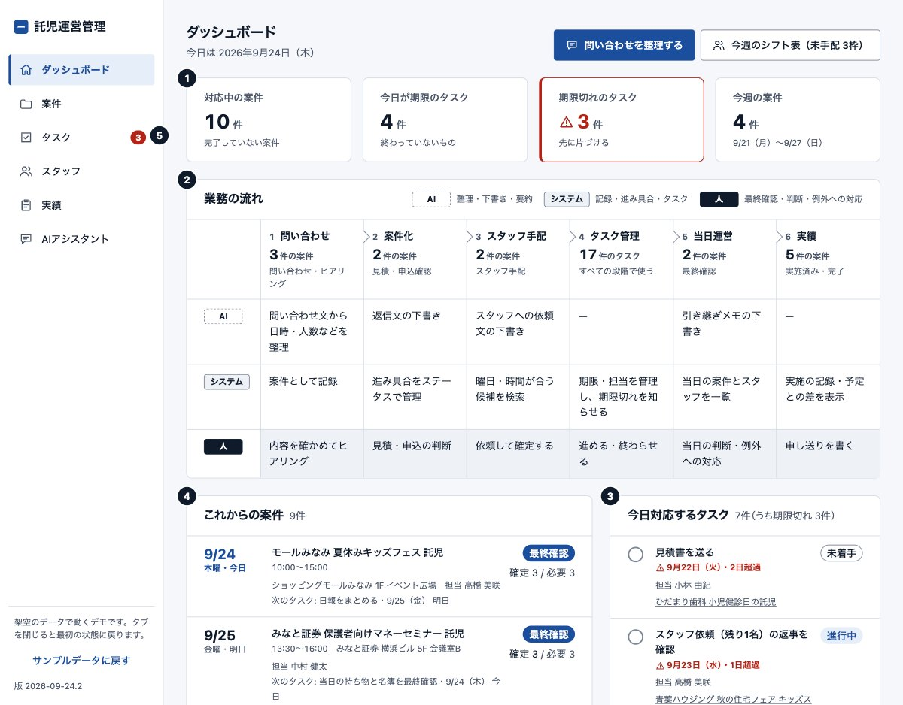
| 画面 | できること |
|---|---|
| ダッシュボード | 今日の状況をひと目で確認する |
| 案件 | 案件の一覧・検索・登録。案件を開くと、進み具合・申込フォーム・スタッフ（交通費）・タスク・実績・AIをまとめて扱える。届いたGoogleフォームの回答の確認もここ |
| タスク | すべての案件のタスクを、期限順に管理する |
| スタッフ | スタッフの登録・編集（対応できる曜日と時間）と、シフト表（常設託児室3か所の枠と、案件・スタッフの予定）。上のタブで切り替える |
| 実績 | 実施した託児の人数・時間・申し送りを記録する。請求準備（交通費・人数をまとめて、経理へ引き継ぐ）もここ |
| AIアシスタント | 問い合わせの整理と、文章の下書き |
このデモのデータは、開いているブラウザのタブの中だけに置かれます。画面を再読み込みしても残りますが、タブを閉じると、最初のサンプルに戻ります。途中でやり直したいときは、メニューの下にある「サンプルデータに戻す」を押します（確認が出ます）。
問い合わせを受けてから、実績を記録するまでを、順に説明します。
メールやフォームで届いた問い合わせの文章を貼り付けると、AIが「開催日・時間・会場・子どもの人数・年齢構成・確認事項」に分けます。人が確かめて直したあとで、案件として登録します。
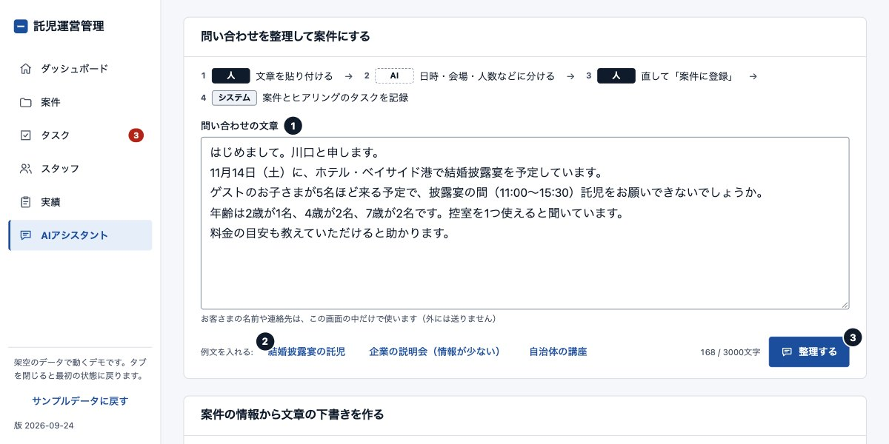
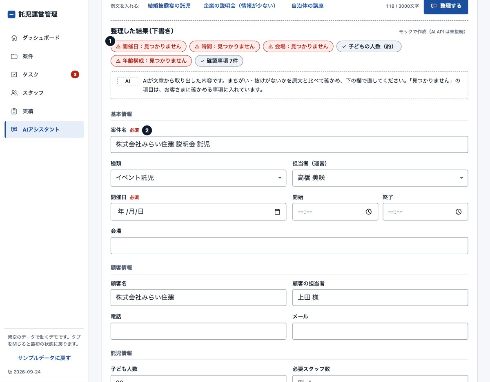
登録すると、次のことが自動で行われます。
AIは、日付・時間・人数などの決まった書き方から取り出しています。ほかの案件との日時のかさなりや、書かれていない事情は、見つけられません。たとえば、日付が過ぎている・曜日が日付と合わない場合は、確認事項に出しますが、直すのは人です。必要スタッフ数は、人数と年齢を見て、人が決めます。
「案件」を開き、右上の「案件を登録」を押します。案件名と開催日が必須です。子ども人数と必要スタッフ数は、分からなければ空のまま（画面では「未入力」）にします。0人のときは、0と入れます。
案件を開くと、いちばん上に「進み具合」が出ます。案件は、問い合わせ → ヒアリング → 見積 → 申込確認 → スタッフ手配 → 最終確認 → 実施済み → 完了、の8つのステータスで進みます。
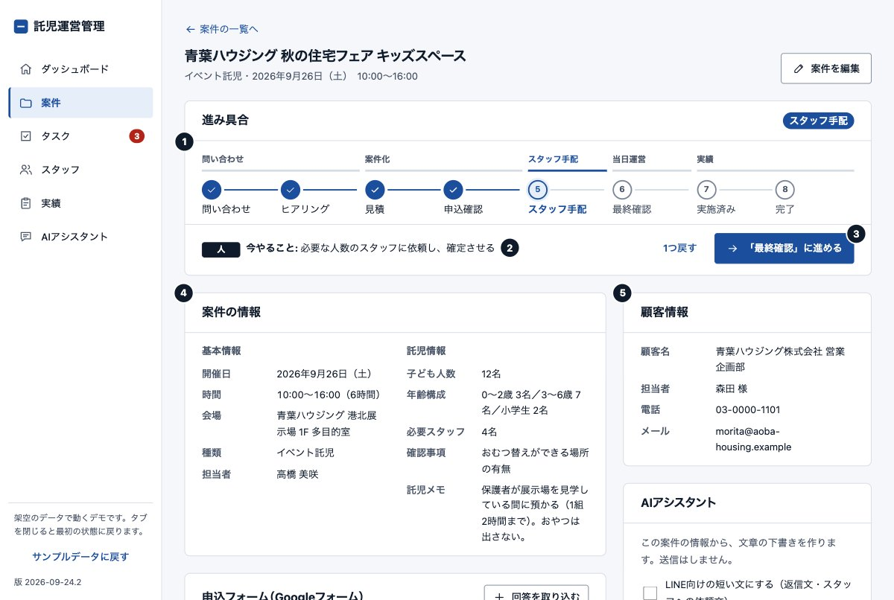
次のステータスに進めるとき、まだ終わっていないことがあると、知らせが出ます。知らせは止めるものではありません。内容を見て、進めてよいかを担当者が決めます（「このまま進める」または「キャンセル」）。
| 進めるとき | 出る知らせ |
|---|---|
| 「スタッフ手配」に進める | 必要スタッフ数がまだ入っていません |
| 「スタッフ手配」から進める | 確定したスタッフがあと○名足りません／返事待ち（依頼中）のスタッフが○名います |
| 「実施済み」に進める | 開催日より前です |
| 「完了」に進める | 実績がまだ登録されていません／終わっていないタスクが○件あります |
ステータスを進めると、そのステータス用の定型タスクが、期限と担当者（案件の担当者）つきで自動で作られます。同じ名前のタスクは、重ねて作られません。使わないタスクは、3.7で外せます。
| 進めたステータス | 作られるタスク（期限の目安） |
|---|---|
| 見積 | 見積書を作る（1日後）／見積を送り、返事を確認する（4日後） |
| 申込確認 | Googleフォームを案内する（当日）／申込フォームの回答を確認する・必要スタッフ数を決める（2日後） |
| スタッフ手配 | スタッフへ依頼を出す（当日）／返事を確認して確定する・交通費を確認して確定する（3日後） |
| 最終確認 | 備品の準備を事務所スタッフに連絡する（開催の3日前）／スタッフへ仕事内容・会場を連絡する（2日前）／当日の配置表・名簿を確認する（前日） |
| 実施済み | 実績を登録する（当日）／請求に必要な情報をまとめる・お客さまへ実施報告を送る（1日後）／経理へ引き継ぐ（2日後） |
「案件」の一覧では、検索（案件名・会場・顧客名）、ステータス、開催日（今日以降・今週・今月・来月・過去）で絞り込めます。一覧には、開催日・時間・会場・子どもの人数・必要スタッフ数・確定数・ステータス・担当者・次のタスクが並びます。完了していない案件が、開催日の近い順に上に出ます。
お客さまがGoogleフォームで申し込むと、回答は自動でシステムに届きます（担当者が表をコピーする必要はありません）。届いた回答は「未確認」として並び、システムが案件と自動で突き合わせて、ちがう所を見つけます。案件に反映するかどうかは、人が確かめて決めます。システムが案件を勝手に書き換えることはありません。自動で届くのは、フォームに付けた小さなスクリプト（Google Apps Script。導入のときに管理者が設定します）が、回答をシステムへ送るからです。
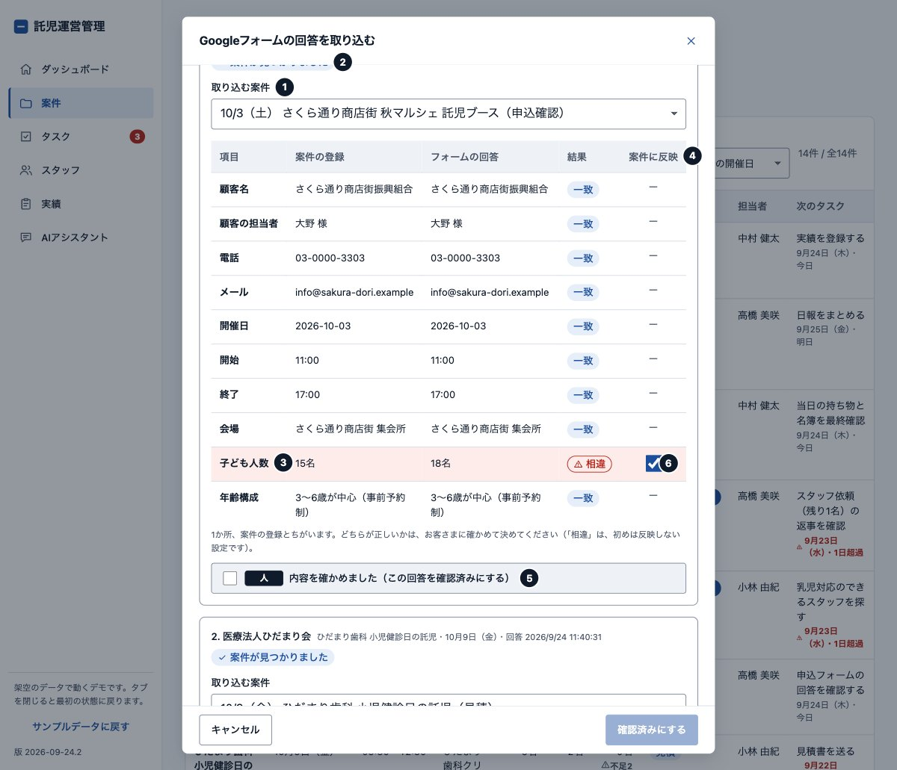
確認済みにすると、案件の詳細の「申込フォーム」の欄に回答が残り、その案件の「申込フォームの回答を確認する」タスクが完了になります。同じ回答は、重ねて届いても、重ねて保存されません。
ステータスが「見積」「申込確認」のときの返信文と、見積のご案内文には、Googleフォームの案内（URL と、入力してもらう項目）が入ります。URL は、「案件」の「Googleフォームの設定」で入れます（https で始まる URL だけ）。入れていないときは、〔GoogleフォームのURL〕と出ます。
この手引きは、実際の業務で使う形（サーバー版）を前提に書いています。見本のデモには自動で届く仕組みがないため、スプレッドシートからコピーした表を貼り付けて取り込みます（「案件」の「申込フォームの回答を取り込む」）。届いたあとの突き合わせと確認の流れは、同じです。
案件の詳細の「担当スタッフ」で、必要な人数のスタッフをそろえます。「確定 2 / 必要 4 ▲不足2 依頼中 1」のように、確定した人数・必要な人数・足りない人数・返事待ちの人数が出ます。
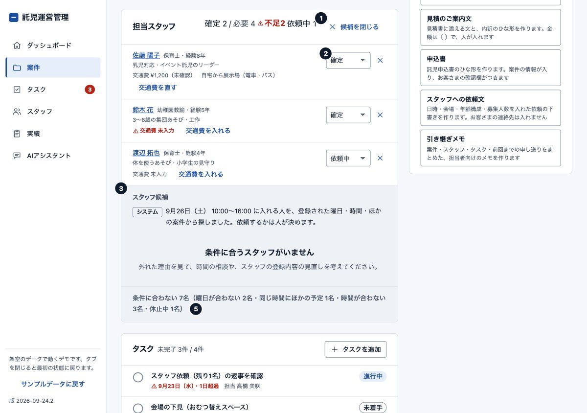
担当スタッフごとに、交通費を記録します。請求に必要な情報になるので、確定したスタッフの分は、確定の印まで入れます。
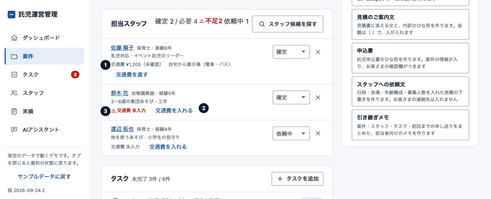
「スタッフ」の画面で、名前・ステータス（稼働可／休止中）・対応できる曜日と時間・資格・経験年数・対応経験・備考を登録・編集します。スタッフの名前を押すと、その人が担当する案件が見られます。候補は、ここに登録された曜日と時間で探します。予定が変わったら、更新してください。
「スタッフ」の上のタブから「シフト表」を開きます。常設託児室3か所の枠（1つの枠＝1人分の勤務の時間）と、イベント託児の案件、スタッフの予定を、1週間の表で見ます。「未手配」の枠を探して、スタッフを手配するのが主な使いかたです。
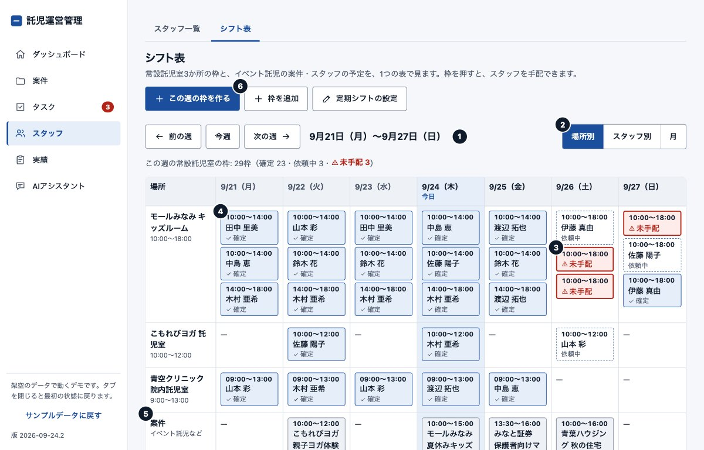
「タイムライン」は、1日を、8時〜20時ごろの横向きの時間軸で見る表示です。「だれが、何時から何時まで入るか」「何人が、何時に同時に入るか」が、横の長さで分かります。時間が広い予定があるときは、時間軸が自動で広がります。
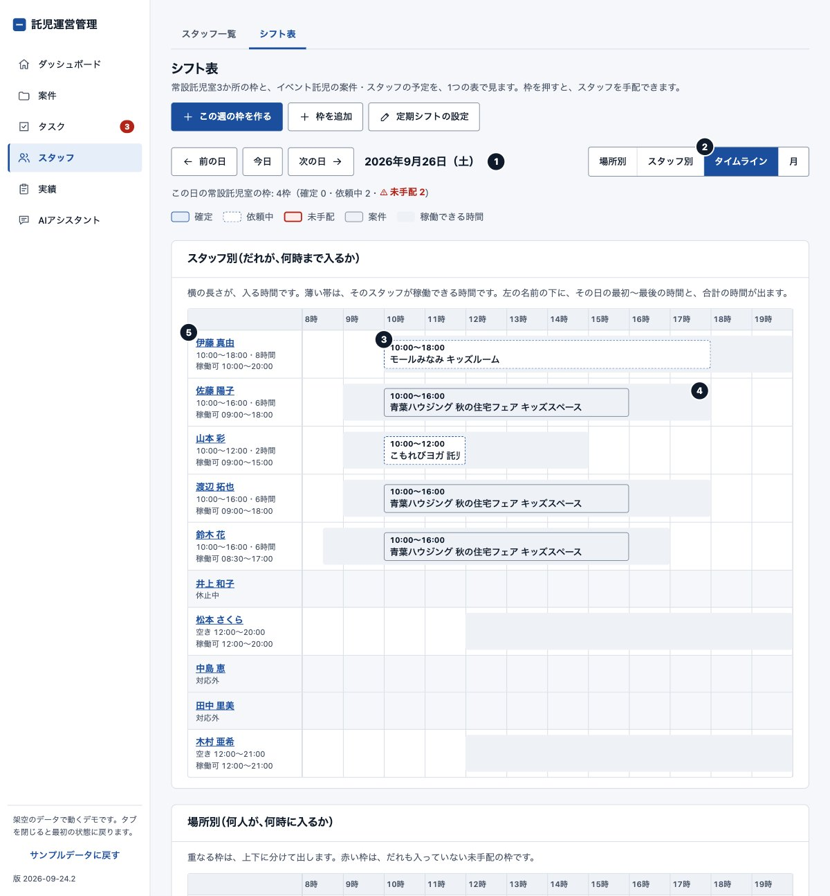
下の「場所別」では、場所ごとに、枠が何人分どの時間に入るかを見ます。同じ時間に重なる枠は、上下に分けて出します。だれも入っていない枠は赤い「未手配」で出ます。
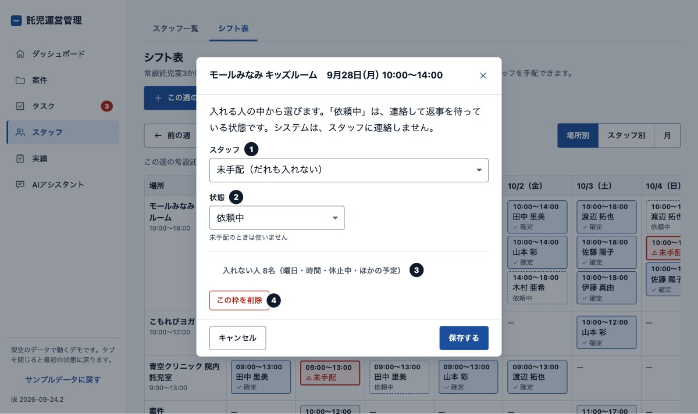
枠の候補は、「スタッフ」に登録された曜日・時間で探します。予定が変わったら、先にスタッフの登録内容を直してください。案件のスタッフ候補（3.4）も、シフトの枠との重なりを見て探します。
案件の情報から、5種類の文章の下書きを作れます。案件の詳細の右側「AIアシスタント」か、「AIアシスタント」の画面（案件を選ぶ）から使います。
| 種類 | 作られるもの |
|---|---|
| 顧客への返信文 | 案件のステータスに合わせた、丁寧な返信の文（問い合わせ・見積・申込・スタッフ手配・最終確認・実施後）。日時・会場・人数と、確認事項の質問が入ります。見積・申込確認のときは、Googleフォームの案内が入ります |
| 見積のご案内文 | 見積書に添える文と、内訳のひな形。お見積り金額・内訳・交通費・有効期限は〔 〕で、人が入れます（システムは金額を作りません）。フォームの案内つき |
| 申込書 | 託児申込書のひな形。案件とお客さまの情報が入り、アレルギー・キャンセルの決まりは〔 〕で、お客さまに確かめて入れます。お名前・日付の記入欄つき |
| スタッフへの依頼文 | 日時・集合・会場・お子さまの人数と年齢・募集人数（必要数 − 確定数）が入った依頼の文。返事の期限は、2日後（開催日の前日まで）。お客さまの名前や連絡先は入りません |
| 引き継ぎメモ | 案件の要点・担当スタッフ・残りのタスク（期限切れの印つき）・確認事項・託児メモ・同じお客さまの前回の申し送り。担当を交代するときに使います |
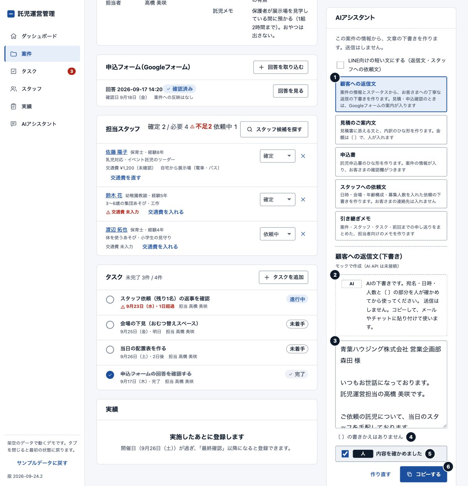
内容を変えたいとき（案件の情報を直したあとなど）は、「作り直す」を押します。
「タスク」の画面には、すべての案件のタスクが、期限の近い順に並びます（未完了が上）。期限を過ぎたものは、赤い文字と印で出ます。
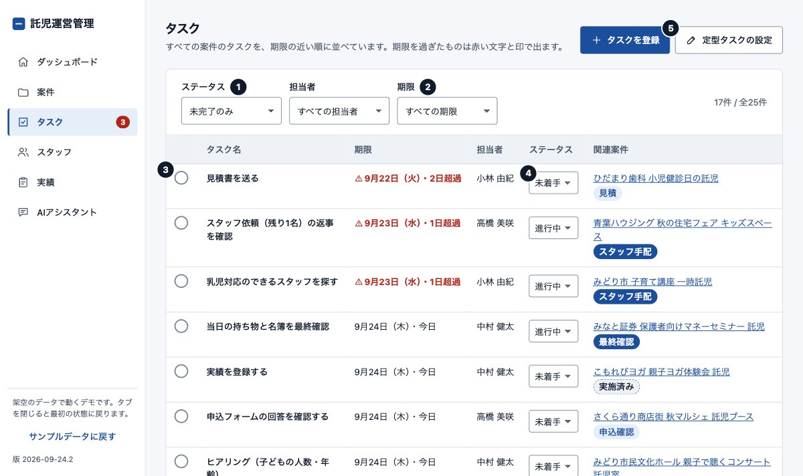
「定型タスクの設定」を押すと、ステータスを進めたときに作られるタスクを、1つずつ「使う・使わない」にできます（初めは、すべて使う）。事務所のやり方に合わないものは、外してください。
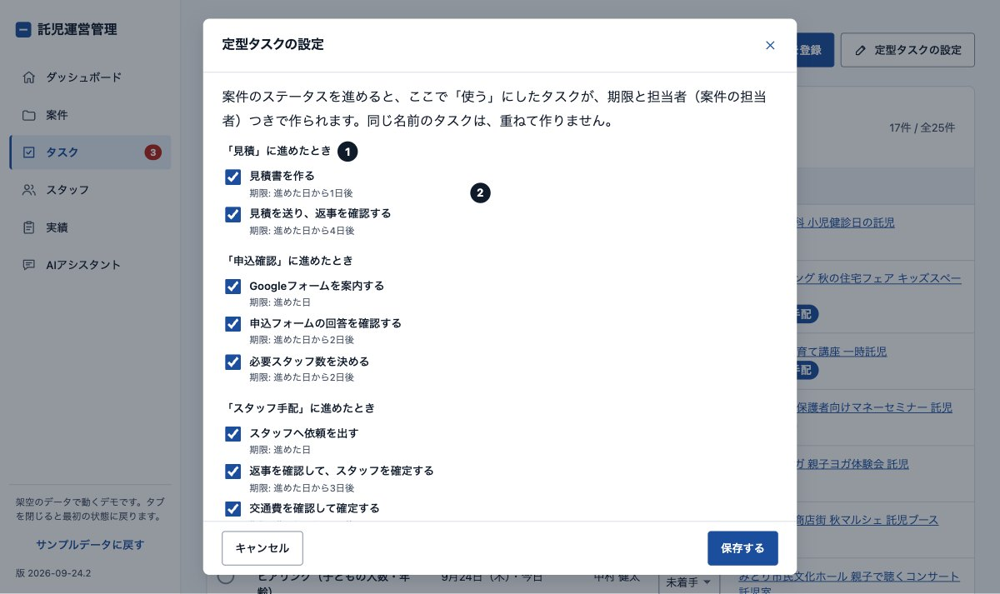
託児が終わったら、実際の人数・時間・申し送りを「実績」に残します。予定との差が分かり、申し送りは次の引き継ぎメモにも使われます。
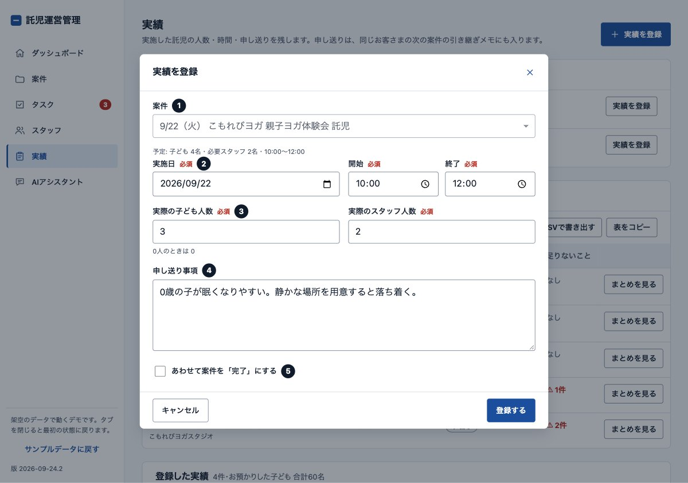
登録すると、案件のステータスが進み、その案件の「実績を登録する」タスクも完了になります（「実施済み」に進んだときは、請求準備などの定型タスクも作られます）。実績を直すときは、案件の詳細の「実績を編集」を押します。
実施したあと、請求のために経理へ渡す情報を、案件ごとにまとめます。請求額は計算しません。実施日・時間・人数・スタッフ・交通費を、そのまま使える形にそろえます。「実績」の画面の「請求準備」の欄から使います。
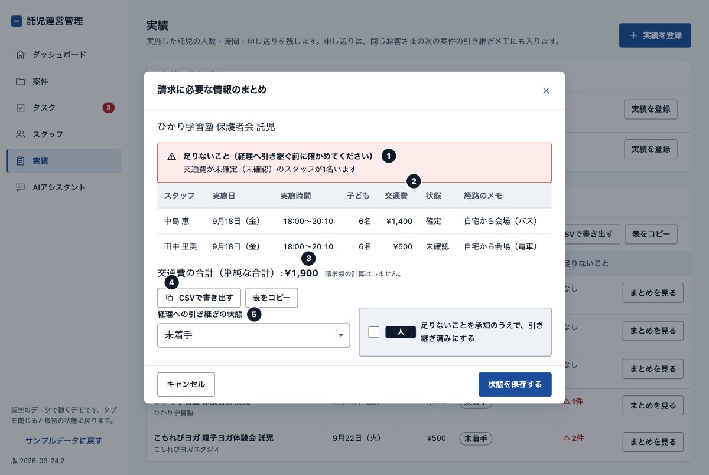
お客さまの名前などが「=」「+」「-」「@」で始まっていると、表計算ソフトが式として動かしてしまうことがあります。書き出すときは、そうした文字の先頭に「'」をつけて、式として動かない形にしています。
1日のはじめと、場面ごとの確認のしかたの例です。事務所の運用に合わせて、調整してください。
外出先や現場では、スマホのブラウザで、今日のタスクと案件を確認できます。できる操作は、パソコンと同じです。
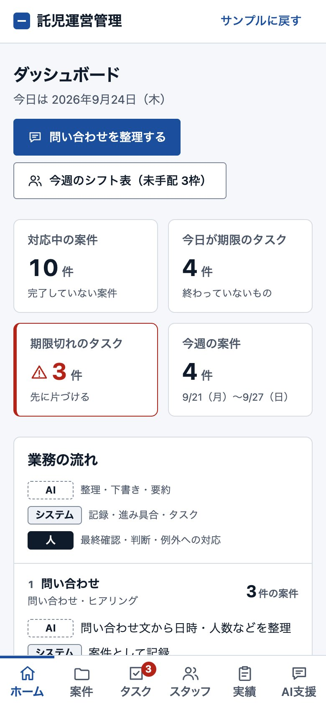
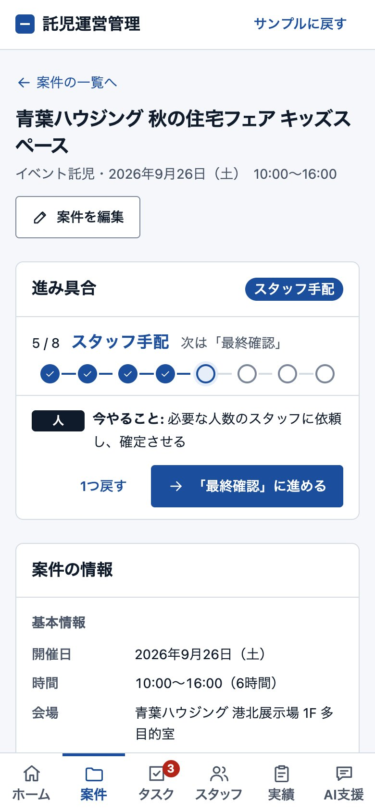
| パソコン | スマホ |
|---|---|
| 左のメニュー | 画面の下に、6つのボタン（ホーム・案件・タスク・スタッフ・実績・AI支援）。タスクには、期限切れの数が出ます |
| 表（一覧） | 1件ずつのカードに変わり、項目名がついて出ます |
| 進み具合の8段階 | 「5 / 8 スタッフ手配」と、丸の並びで出ます |
| シフト表（場所別・スタッフ別） | 日ごと（スタッフ別は、人ごと）の並びに変わります。「タイムライン」は、横にスクロールして見ます。「月」は、そのまま日の表です（未手配は「▲数」） |
| こんなとき | こうします |
|---|---|
| 画面を再読み込みしたら、データが消えた？ | 再読み込みでは消えません。タブを閉じると、最初のサンプルに戻ります（デモの決まりです）。 |
| 「スタッフ候補を探す」で、探せないと出る | 開催日と、開始・終了の時刻が入っていません。「案件を編集」で入れてください。 |
| スタッフ候補が0名 | 「条件に合わない」の理由を見てください。時間の相談をするか、スタッフの曜日・時間の登録が古くないか、確かめます。 |
| ステータスを進めようとしたら、知らせが出た | 内容を確かめ、先に済ませるか、問題なければ「このまま進める」を押します。止められることはありません。 |
| AIの整理結果が、まちがっている・「見つかりません」が多い | 入力欄で直します。AIは決まった書き方から取り出す仮の処理なので、書き方によっては読み取れません。原文と見比べて確かめてください。 |
| 「案件に登録」・「コピーする」のボタンが押せない | 「確かめました」の印がついていません。内容を確かめて、印をつけてください。 |
| コピーができなかった | 下書きの文が選ばれた状態になります。キーボードでコピー（Macは ⌘＋C、Windowsは Ctrl＋C）してください。 |
| 実績を登録したい案件が出てこない | 実績を登録できるのは、開催日を過ぎて「最終確認」以降になった案件か、「実施済み」の案件です。ステータスを確かめてください。 |
| 実施日に「未来の日は選べません」と出た | 実施日は、今日以前の日にします。実施したあとに登録してください。 |
| 入力欄に、赤い文字が出た | 赤い文字が、何がだめで、どう直すかを書いています。そのとおりに直してください。 |
| 案件・タスク・スタッフを削除したい | 削除の操作はありません。スタッフの休止は「休止中」にします。担当スタッフを外す操作だけ、案件の詳細でできます。 |
| Googleフォームに回答があったのに、「未確認の回答」に出ない | 管理者に伝えてください。フォームの送信の設定（スクリプト）と、フォームに「開催日」「会社名（お名前）」にあたる質問があるかを確かめます。急ぐときは、回答のスプレッドシートを見て、案件に手で入れられます。 |
| 回答が「一致する案件がありません」と出る | 開催日や顧客名が、案件と大きくちがっています。取り込む案件を選び直すか、「新しい案件として登録する」を選びます。 |
| 「相違」の項目は、どちらが正しい？ | システムには決められません。お客さまに確かめてから、反映するかを選びます。反映しなければ、案件の登録はそのままです。 |
| 返信文に〔GoogleフォームのURL〕と出る | 「案件」の「Googleフォームの設定」で、フォームの URL を入れてください（https で始まる URL だけ）。 |
| シフト表の週に、枠がない | 「この週の枠を作る」を押します。定期シフトが決まっていない場所は、先に「定期シフトの設定」で決めます。 |
| 枠に入れたい人が、選べない | 手配の画面の「入れない人」で、理由を見ます。曜日・時間が合わない、休止中、同じ時間にほかの案件や枠に入っている、のどれかです。 |
| 交通費を「確定」にできない | 金額が未入力です。金額を入れてください（かからないときは 0）。 |
| 請求のまとめで、「引き継ぎ済み」にできない | 足りないことが残っています。先に直すか、確かめたうえで「承知のうえで」に印をつけます。 |
| CSVを開くと、文字化けする | Excelで開ける形（UTF-8・BOMつき）で書き出しています。それでも化けるときは、「表をコピー」で、スプレッドシートに貼り付けてください。 |
| 定型タスクが、ほしくない | 「タスク」の「定型タスクの設定」で、使わないものの印を外します。すでに作られたタスクは、そのまま残ります。 |
| 最初の状態にやり直したい | メニューの下の「サンプルデータに戻す」を押します。登録したものは、すべて消えます。 |
このデモは、操作の流れを確かめるための見本です。実際の業務で使うには、データを保存する仕組みが必要です。
| 項目 | 今のデモ | 実際の業務で使う形（設計済み） |
|---|---|---|
| データの保存 | ブラウザのタブの中だけ。タブを閉じると消える | サーバーのデータベースに保存。毎日の自動の控えつき |
| 使う人 | 1人 | 複数の担当者が、同じデータを見る。同時に直したときは、上書きせずに知らせる |
| ログイン | なし | ログインと権限（管理者・運営担当）。ステータスを変えた記録が残る |
| Googleフォーム | 回答の表を貼り付けて取り込み、案件と突き合わせる | フォームに小さなスクリプト（Google Apps Script）をつけ、回答が届くと自動でサーバーに送る。人が確かめて反映するのは、デモと同じ |
| AI | 決まった書き方で動く仮の処理 | 本物のAI。キーはサーバーだけに置き、AIに送る情報は用途ごとに絞る |
| メール・チャット | 送らない（コピーして人が送る） | 送らない（人が確かめて送る） |
実際の業務で使う形（サーバー版）は、設計書までを作成しています。作るときは、要件・設計のレビューを行ってから開発に進みます。
| # | 進め方 | やること |
|---|---|---|
| 1 | デモで流れを試す | この書類の3章を、サンプルのデータで一通りやってみる。運営担当者どうしで、画面の感想を出し合う |
| 2 | 自分たちの運用と照らす | 下の「決めておくこと」を話し合い、8つのステータスや項目が合っているかを確かめる。直したい所は、要望として整理する |
| 3 | 実際の形を作る | ログイン・データベース・本物のAIをつけた形を開発し、テストする |
| 4 | 試しに運用する | 少人数・少ない案件（1〜2件）で使い、困った所を直す |
| 5 | 本格的に使い始める | 担当者全員で使い始める。運用のルールを、この書類に書き足す |
| # | ステータス | 段階 | 今やること |
|---|---|---|---|
| 1 | 問い合わせ | 1 問い合わせ | 問い合わせの内容を確かめ、ヒアリングの日時を決める |
| 2 | ヒアリング | 1 問い合わせ | 子どもの人数・年齢・部屋・アレルギーの有無などを聞き取る |
| 3 | 見積 | 2 案件化 | 見積を作って送り、返事を待つ |
| 4 | 申込確認 | 2 案件化 | 申込書を受け取り、内容を確かめる |
| 5 | スタッフ手配 | 3 スタッフ手配 | 必要な人数のスタッフに依頼し、確定させる |
| 6 | 最終確認 | 5 当日運営 | 当日の持ち物・名簿・集合時間を確かめる |
| 7 | 実施済み | 6 実績 | 実績（人数・時間・申し送り）を登録する |
| 8 | 完了 | 6 実績 | この案件の対応は終わり |
| 言葉 | 意味 |
|---|---|
| ステータス | 案件が今どの段階にあるか。8つあります（付録A） |
| 稼働可／休止中 | スタッフの状態。休止中の人は、スタッフ候補に出ません |
| 依頼中／確定 | 案件に入るスタッフの状態。依頼中は返事待ち、確定は入ることが決まった状態 |
| 不足 | 必要スタッフ数から、確定した人数を引いた数。「依頼中」の人は、数に入りません |
| 未入力 | まだ入れていない項目。0人・0名とは別です |
| 確認事項 | お客さまに確かめること。AIが「見つかりません」とした項目も、ここに入ります |
| 申し送り | 実施したあとに残す、次の担当者へのメモ |
| 〔 〕 | AIの下書きの中の、人が書きかえる所の印 |
| 枠（シフトの枠） | 常設託児室の、1人分の勤務の時間。場所・日付・時間・入るスタッフ・状態を持つ |
| 定期シフト | 場所ごとの、曜日・時間・人数のパターン。「この週の枠を作る」で、週の枠になる |
| 未手配 | だれも入っていない枠。シフト表で赤く出る |
| 突き合わせ | 届いた回答（未確認）と案件の登録内容を、項目ごとに比べること。「一致・相違・案件にない・未入力」で示す |
| 定型タスク | ステータスを進めたときに、自動で作られる決まったタスク |
| 経理への引き継ぎ | 請求に必要な情報を、経理担当に渡すこと。請求額は計算しない |
| モック | 本物のAIにつながず、決まった書き方で動く仮の処理。このデモのAIは、モックです |